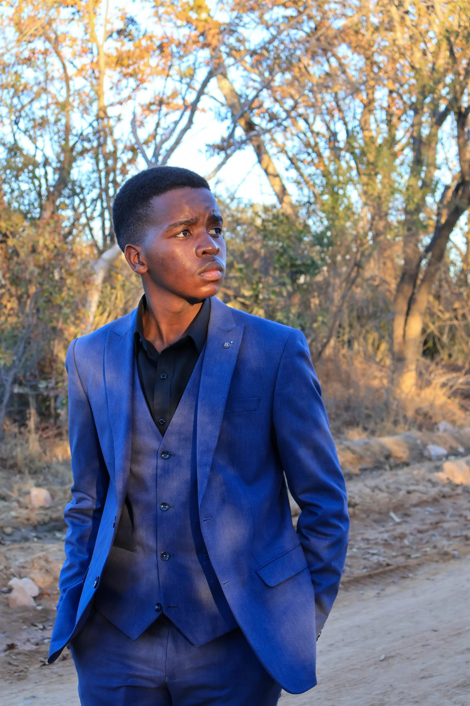

Samuel Takudzwa Chingosho · Zimbabwe & South Africa
Made to
be seen.
Photography, digital flyers, video and social marketing—made with a personal touch. Every project starts with your brief and a custom quote.
Working since 2022

A small creative practice with a wide lens.
From a portrait session to the sound and visuals of an event, Schings Digital helps people and businesses show up with confidence.
Photography
Portraits and small events
02Digital flyers
Social-ready and print-ready design
03Video
Filming and editing for the moments that move
04Social marketing
Content, account support and paid ads
05PA systems
Operation and local equipment supply
A few things
made with care.
Explore portrait photography, school media support and campaign designs for businesses. Every brief is different; the work spans photography, flyer design, video and social channels.
One person.
A personal approach.
Schings Digital is Samuel Takudzwa Chingosho’s personal media brand. He works solo and brings in collaborators when a project needs them, keeping the relationship direct and the process flexible.
Based in Kwekwe and Kempton Park, Samuel works across Zimbabwe and Gauteng, and can travel farther when expenses are covered. Flyer files can be prepared for both social sharing and print.
Meet Samuel